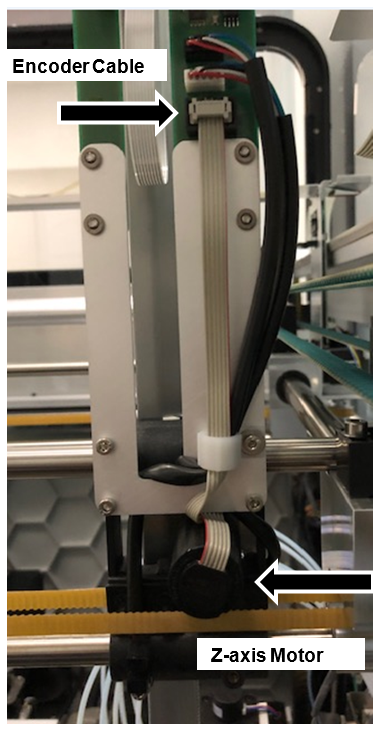
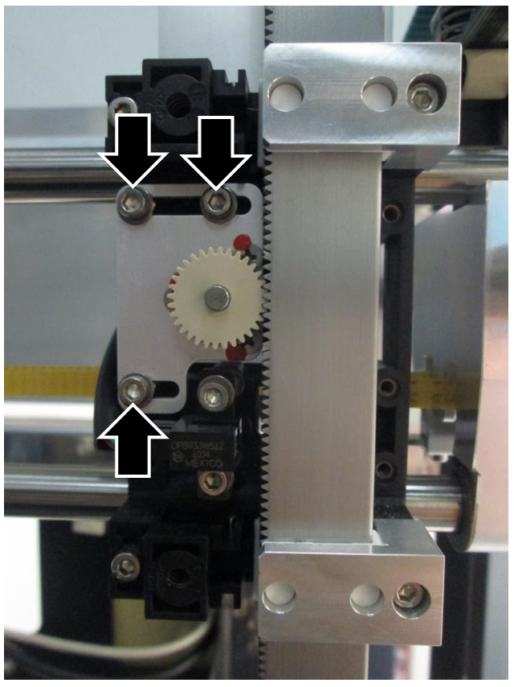
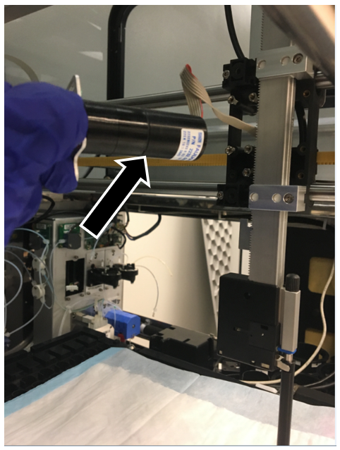
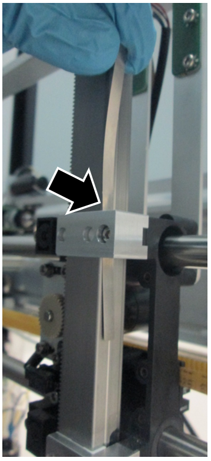
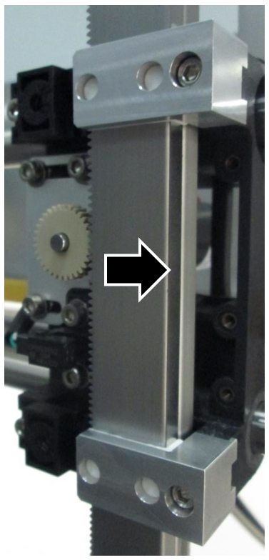
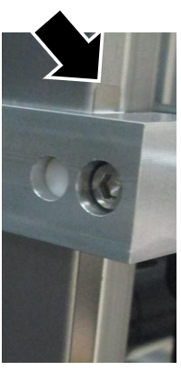
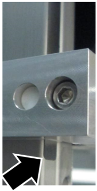
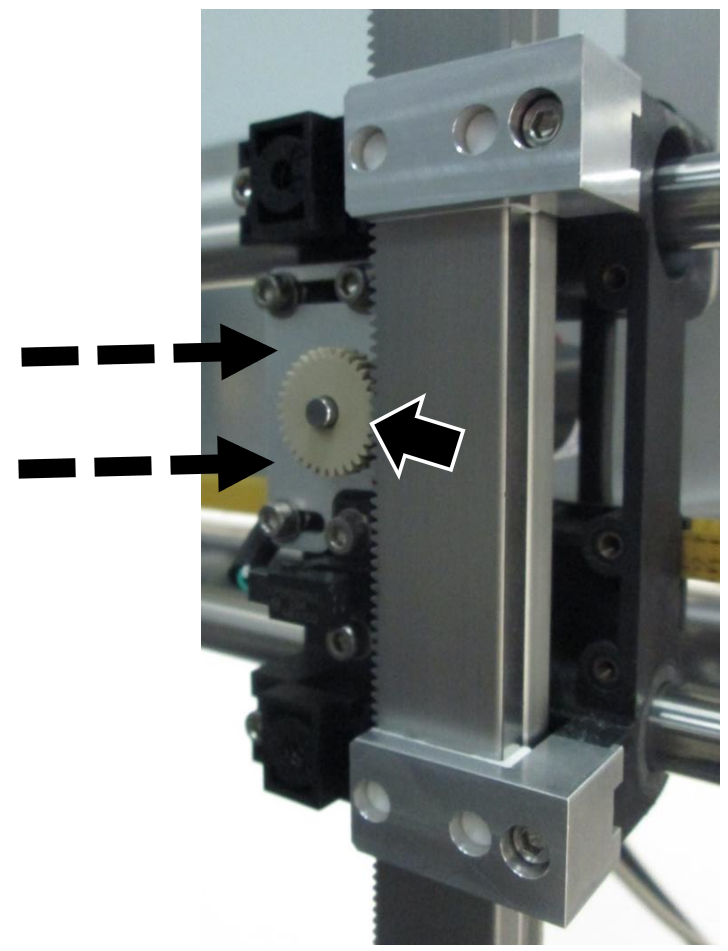
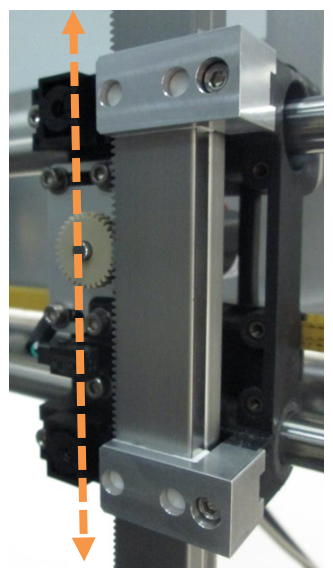

Pipettor Z-Sledge Motor Removal and Replacement
Parts and Materials Required
- Bench Pads
- FSE Tool Kit (including pipettor teach tool and teach caps)
- Teacher Software v5.14
- Pipettor, Z-Sledge Motor Left
- Pipettor, Z-Sledge Motor Right
- Fusion, Pipettor, Z-Sledge Motor
- Pipettor Z-Motor Mesh Shim Tool
Time Required
- 60 minutes
Procedure

|
Note—The Panther Sample Pipettor is shown throughout this procedure. The procedure is the same for the Reagent Pipettor and both Panther Fusion Pipettors. |
- Power down the Panther System.
- Open the Front Canopy doors to expose the pipettors.
- Lay bench pads over the upper bay to prevent parts from falling into the system.
- Manually move the pipettor arm that will be repaired.
 Disconnect the Z-sledge motor encoder cable from the Y-sledge PCB. Pay close attention to how the cable is routed. Remove the cable strain relief, if needed.
Disconnect the Z-sledge motor encoder cable from the Y-sledge PCB. Pay close attention to how the cable is routed. Remove the cable strain relief, if needed.

- Remove the Z-sledge motor mounting screws.

- Gently remove the Z-sledge motor.

- Install the new Z-sledge motor.
- Loosely tighten the 3 mounting screws from the Z-axis motor bracket.
- Connect the Z-axis motor encoder cable to the Y-Sledge PCB and cable strain relief, routing the cable in the same manner as noted in Step 5.
- Slide the Mesh Shim Tool in between the pipettor and slide bearing as shown. The tool should extend about 5mm past the top and bottom slide bearing.




- Press LIGHTLY on the Z-motor to mesh the teeth on the motor gear with the teeth on the pipettor arm, then tighten the 3 motor screws. The Shim Tool will ensure proper meshing of the Z-motor (not too tight or loose).

- Manually move the pipettor down or up until the Shim Tool slides free.

Verification
- Power on the Panther System.
- For Panther, teach all positions using Teacher SW v5.14 or higher.
For Panther Fusion, teach all positions that apply to the adjusted pipettor. - From Service SW, complete a 30-cycle cLLD Capacitive liquid level detection Test on the adjusted pipettor(Left, Right, Fusion) and Fusion Cap and Vial Robot. For details see: Pipettor-LLD-Test and Fusion Pipettor Teaching
- If a Pipettor was replaced, perform a pressure integrity test (No PQ is Required).
- Release the system and monitor the customer's next run for any issues.
- Ensure the Service Record notes document the completion of this procedure and attach the cLLD and PI Test (if performed) to the Service Record.
 button at the top of the page to send feedback, comments, or change requests.
button at the top of the page to send feedback, comments, or change requests.